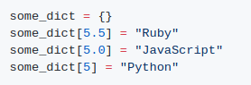
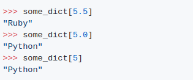
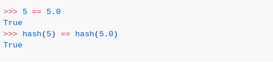

1.
output
"Python"은 "JavaScript"의 존재 가치를 없앴습니까?
설명:
Python 사전은 평등을 확인하고 해시 값을 비교하여 두 키가 동일한지 확인하세요.
값이 동일한 불변 개체는 항상 파이썬의 해시가 동일합니다

참고: 값이 다른 개체도 해시가 같을 수 있습니다(해시 충돌).
python은 5와 5.0을 사전의 동일한 키로 인식하기 때문에 python이라는 문구가 실행되면 기존 값인 "JavaScript"를 "Python"으로 덮어씁니다.
StackOverflow의 대답은 그것의 뒤에 있는 이론들을 아름답게 설명합니다.